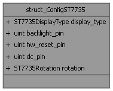

- Generated by
 1.16.1
1.16.1
data used to configure the display device More...
#include <st7735.h>

Public Attributes | |
| ST7735DisplayType | display_type |
| indicates which type of TFT panel must be configured | |
| uint | backlight_pin |
| indicates the GPIO connected to the backlight input | |
| uint | hw_reset_pin |
| indicates the GPIO connected to the hardware reset input | |
| uint | dc_pin |
| indicates the GPIO connected to the Data/Command_ input | |
| ST7735Rotation | rotation = ST7735Rotation::_0 |
| indicates which rotation will be applied | |
data used to configure the display device